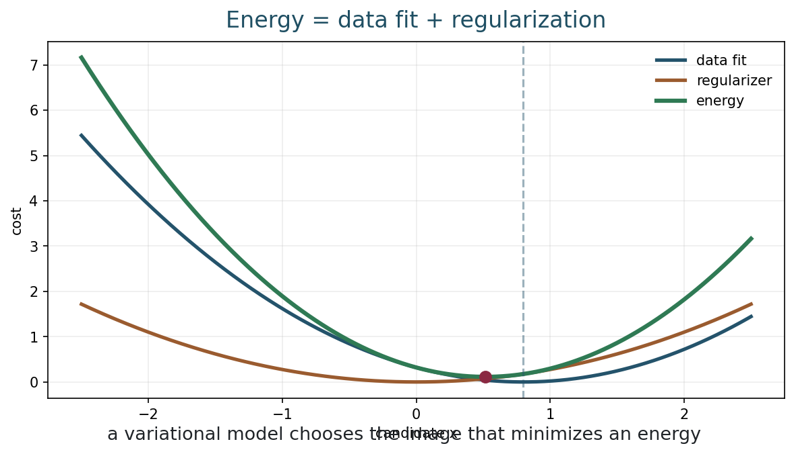
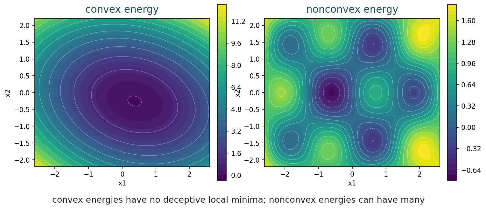
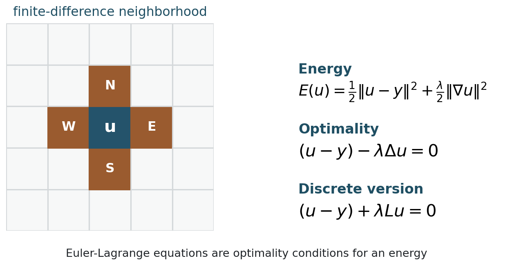
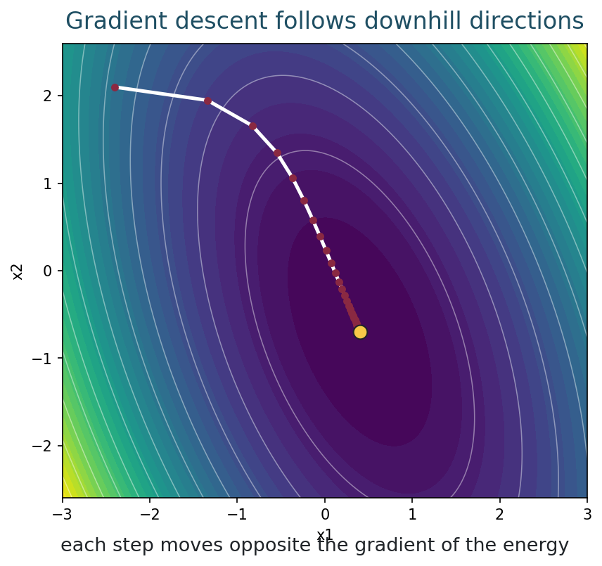
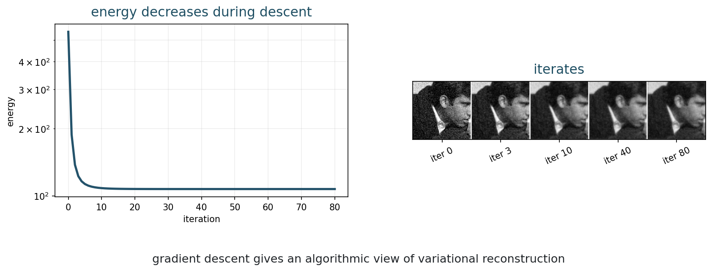
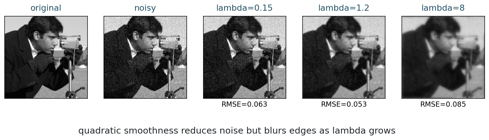

MATH 435: Mathematical Imaging - Week 7
2001-07-01
From formula to framework
What does it mean to reconstruct an image by minimizing an energy?
| Time | Work |
|---|---|
| 0-8 min | recap Tikhonov regularization |
| 8-20 min | variational energy viewpoint |
| 20-32 min | convexity as geometry |
| 32-50 min | Euler-Lagrange derivation for \ell_2 smoothing |
| 50-62 min | gradient descent intuition |
| 62-70 min | real-image quadratic denoising |
| 70-75 min | synthesis check |
Tikhonov regularization solves
\min_x \|Ax-y\|_2^2+\lambda\|x\|_2^2.
This is one example of a much larger idea: choose an energy and minimize it.
We write reconstruction as
\hat{x} = \operatorname*{argmin}_x E(x).
Often:
E(x)=D(y,f(x))+\lambda R(x).
Data fidelity:
D(y,f(x))
agreement with measurements.
Regularization:
R(x)
preferred image structure.
One objective, many models
Data plus prior preference

| Model | Energy |
|---|---|
| Gaussian direct denoising | \|x-y\|_2^2 |
| Tikhonov | \|Ax-y\|_2^2+\lambda\|x\|_2^2 |
| Quadratic smoothing | \|u-y\|_2^2+\lambda\|\nabla u\|_2^2 |
| Poisson data | \sum_i f_i(x)-z_i\log f_i(x) |
5 minutes
For
E(u)=\frac12\|u-y\|_2^2+\frac{\lambda}{2}\|\nabla u\|_2^2,
identify the data term, the regularizer, and the parameter.
Geometry of energies
Can we trust local descent?

A function is convex if the line segment between two points on its graph stays above the graph.
For minimization, convexity means there are no deceptive local minima.
For a convex energy:
Convex does not always mean easy, but it removes a major ambiguity.
The energy
E(u)=\frac12\|u-y\|_2^2+\frac{\lambda}{2}\|\nabla u\|_2^2
is convex for \lambda\ge 0.
This is why it is a good first variational model.
5 minutes
Which energies are convex?
Optimality condition
Set the first variation to zero
Consider the denoising energy
E(u) = \frac12\int_\Omega (u-y)^2\,dx + \frac{\lambda}{2}\int_\Omega |\nabla u|^2\,dx.
y is the noisy image and u is the reconstruction.
To test optimality, perturb u in direction v:
u_\epsilon = u+\epsilon v.
At a minimizer, the derivative with respect to \epsilon must vanish at \epsilon=0:
\left.\frac{d}{d\epsilon}E(u+\epsilon v)\right|_{\epsilon=0}=0.
For the data term:
\frac12\int_\Omega (u+\epsilon v-y)^2\,dx.
Differentiate:
\left.\frac{d}{d\epsilon}\right|_{\epsilon=0} \frac12\int_\Omega (u+\epsilon v-y)^2\,dx = \int_\Omega (u-y)v\,dx.
For the smoothness term:
\frac{\lambda}{2}\int_\Omega |\nabla(u+\epsilon v)|^2\,dx.
Differentiate:
\lambda\int_\Omega \nabla u\cdot \nabla v\,dx.
Ignoring boundary terms for this guided derivation:
\int_\Omega \nabla u\cdot \nabla v\,dx = -\int_\Omega (\Delta u)v\,dx.
So the first variation is:
\int_\Omega \left[(u-y)-\lambda\Delta u\right]v\,dx.
Since this must hold for all perturbations v:
(u-y)-\lambda\Delta u=0.
Equivalently:
u-\lambda\Delta u=y.
The minimizer solves a differential equation.
On a pixel grid:
(u-y)+\lambda L u=0,
where L is a discrete negative Laplacian.

6 minutes
For
E(u)=\frac12\|u-y\|_2^2+\frac{\lambda}{2}\|Du\|_2^2,
show that the discrete optimality condition is
(u-y)+\lambda D^T D u=0.
This is Tikhonov with a different penalty:
Week 6:
\|Ax-y\|_2^2+\lambda\|x\|_2^2.
Week 7:
\|u-y\|_2^2+\lambda\|\nabla u\|_2^2.
The term
\|\nabla u\|_2^2
penalizes changes between neighboring pixels.
It prefers smooth images.
From equation to algorithm
Move downhill
For an energy E(u):
u^{k+1}=u^k-\tau\nabla E(u^k).
\tau is the step size. It controls how far we move each iteration.

The gradient is
\nabla E(u) = (u-y)+\lambda L u.
So gradient descent is:
u^{k+1} = u^k-\tau\left[(u^k-y)+\lambda L u^k\right].
What happens if \tau is too large?
Gradient descent can overshoot or diverge even for a convex quadratic.

5 minutes
In the gradient descent figure:
Quadratic smoothing in practice
Noise reduction versus edge blur

Edges are also large gradients.
What does \|\nabla u\|_2^2 do to edges?
Quadratic smoothing reduces noise and blurs edges.
Total Variation replaces squared gradients by gradient magnitude:
\int_\Omega |\nabla u|\,dx.
This changes the behavior near edges.
examples/ for after-class reruns.8 minutes
Open the Week 7 notebook.
For each expression, identify its role:
Answer in one sentence each:
Total Variation regularization:
MATH 435: Mathematical Imaging